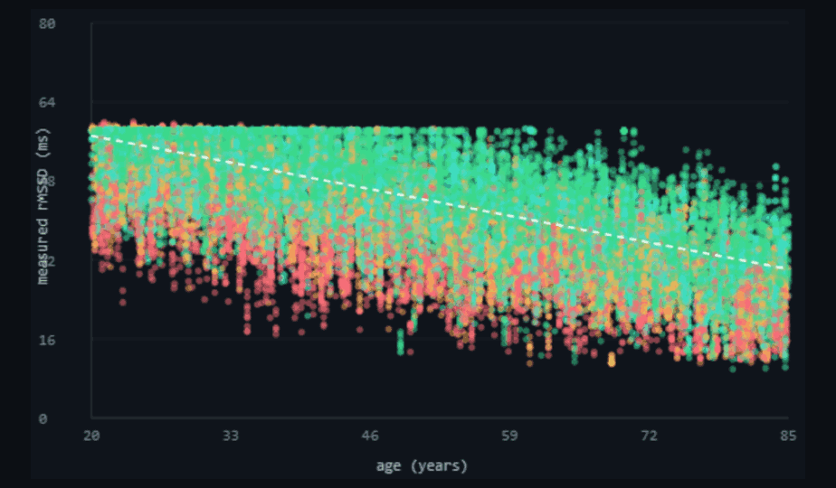
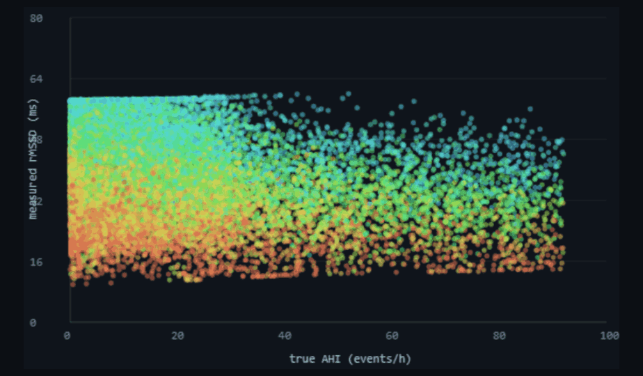
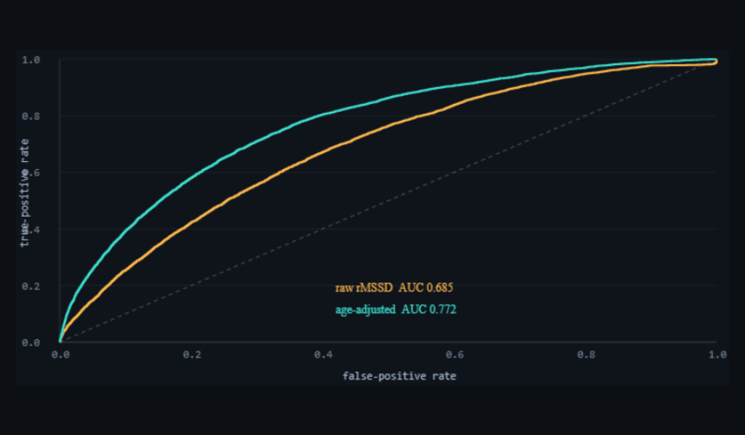

PulseDex RR/HRV node, Tepna physiological-signal suite
Background. Consumer wearables increasingly screen for cardiovascular and sleep-apnea risk from a single nocturnal heart-rate-variability (HRV) metric, typically the root-mean-square of successive RR differences (rMSSD). Because HRV declines with both age and apnea burden, a low rMSSD is structurally ambiguous. Methods. We generated a deterministic synthetic cohort spanning age (20–85 y) and obstructive-sleep-apnea severity, with literature-anchored age→HRV and apnea→HRV couplings, rendered each night's inter-beat-interval series, and measured rMSSD with the unmodified production PulseDex detector (558,787 nights from 100,000 patients). A full-cohort age×AHI regression quantified the confound; a one-parameter age-adjustment was evaluated against the raw screen by receiver-operating-characteristic (ROC) analysis. Results. Measured rMSSD declined by 4.18 ms per decade of age (95% CI 4.17–4.19) and 2.20 ms per 10 events·h⁻¹ of apnea (95% CI 2.19–2.21; model R² = 0.62). The age×AHI interaction, though significant at this sample size (p < 0.001), was negligible in magnitude (+0.03 ms·decade⁻¹·[10 AHI]⁻¹), indicating an effectively additive confound. A single-metric rMSSD screen for moderate-or-worse OSA (AHI ≥ 15) achieved ROC AUC 0.69, with 25% of its high-risk flags arising from non-apneic older individuals; age-adjustment (the residual versus a healthy age reference) raised AUC to 0.78. Conclusion. Under literature-plausible coupling magnitudes, single-metric nocturnal HRV screening materially misattributes apnea risk to age, and a one-parameter age-adjustment recovers discrimination. As the coupling magnitudes are model inputs rather than discovered effects, the result is a quantified bound on screening error, not a clinical validation.
Keywords: heart-rate variability · rMSSD · aging · obstructive sleep apnea · screening · confounding · wearables · simulation
Fitness watches and rings often score your health from a single overnight heart-rhythm number (HRV, specifically “rMSSD”). The catch: that number naturally goes down as you get older, and it also goes down if you have sleep apnea. So a low reading is ambiguous — it could just mean “older,” or it could mean “apnea.” A device that reacts to the number alone can't tell which.
To measure how often this goes wrong, we built a large simulated population of people for whom we know the true age and true apnea level, generated a realistic night of heartbeats for each, and ran it through the same detector the real app uses. Result: a one-number screen blames apnea on age in about 1 of every 4 people it flags. A simple fix — compare each person's HRV to what's normal for their age, rather than to a single cutoff — recovers most of the lost accuracy, using the same watch and no extra data. Because it's a simulation, this is a quantified warning about the screening method, not a clinical finding about real patients.
rMSSD — the root-mean-square of successive RR differences — is the most common short-term HRV index and the backbone of many consumer “recovery” and risk scores. Two well-documented physiological facts collide in nocturnal screening: cardiac vagal tone (and thus rMSSD) declines monotonically with age, and obstructive sleep apnea suppresses HRV through repetitive arousals and autonomic surges. A device that thresholds a single rMSSD value cannot distinguish a healthy 70-year-old from an apneic 40-year-old. We ask, quantitatively: under physiologically plausible coupling magnitudes, how badly does a single-metric HRV screen misattribute apnea risk to age, and how much does an age-adjustment recover?
Patients were generated deterministically (cohort-gen.js) over age (20–85 y, continuous), body-mass index, and an OSA-severity prior. Per-patient autonomic baseline declined with age; per-night rMSSD was further suppressed by that night's apnea–hypopnea index (AHI) and partially recovered under therapy. The two coupling magnitudes are explicit, editable inputs — a baseline age slope (default −0.42 ms/year) and an apnea slope (default −0.22 ms per unit AHI at low–moderate AHI, saturating toward a soft floor at high AHI) — chosen to be literature-plausible; the analysis panel exposes both for sensitivity analysis.
Crucially, rMSSD is not read back from the latent target. Each night's RR series is rendered and passed through the unmodified production detector (pulsedex-dsp.js in a Web-Worker realm): artifact cleaning then time-domain HRV. The analyzed value therefore carries real detector and artifact effects, and recovering the planted couplings from it is a non-trivial check, not a tautology.
We fit a full-cohort interaction OLS, rMSSD ~ age × AHI (mean-centred predictors); built a healthy age reference from non-apneic nights (AHI < 5); and compared two screens for moderate-or-worse OSA (AHI ≥ 15): a raw low-rMSSD rule and an age-adjusted rule using the residual (measured − expected-for-age), by ROC AUC. The age×AHI term tests on the full N whether apnea's HRV cost changes with age (effect modification) rather than slicing into fragile age-stratified subgroups. Misattribution was defined as the fraction of the lowest-rMSSD quartile (“high-risk”) that was in fact non-apneic (AHI < 5).
The run measured rMSSD on 558,787 nights from 100,000 patients (~49 min on a 6-core Web-Worker pool) on the v1.5 generator, in which apnea→rMSSD suppression saturates toward a soft floor and all per-night/per-patient clamp bounds are jittered (removing the AHI=15, AHI=90 and rMSSD floor/ceiling pileup artifacts of earlier versions).
The fitted model (mean-centred predictors, residual df = 558,783) gave an age slope of −0.418 ms·year⁻¹ (95% CI −0.419 to −0.417; t = −840, p < 0.001) and an apnea slope of −0.220 ms per event·h⁻¹ (95% CI −0.221 to −0.219; t = −449, p < 0.001), recovering the planted couplings (−0.42 ms·year⁻¹; low-AHI apnea slope −0.22 ms·AHI⁻¹) and confirming that age and apnea carry comparable, independent weight (predictor correlation r = −0.02). The age×AHI interaction reached significance (β = +2.9×10⁻⁴ ms·year⁻¹·AHI⁻¹, p < 0.001) but is negligible in magnitude: at 558,787 nights the test resolves even a trivial departure from additivity, so the confound is for practical purposes additive and a single age-adjustment de-confounds the entire cohort. Expressed per clinically intuitive unit:
| Quantity | Value |
|---|---|
| rMSSD lost per decade of age | −4.2 ms |
| rMSSD lost per 10 events/h AHI | −2.2 ms |
| ROC AUC — raw single-metric rMSSD | 0.69 |
| ROC AUC — age-adjusted residual | 0.78 |
| “High-risk” flags that are non-apneic (old & healthy) | 25% |
An aging effect of the same order as a ≈19-point AHI swing is hidden inside one rMSSD number. The raw screen is weak and confounded; the age-adjustment lifts discrimination using the same sensor and no new data.

hrv-confound-analysis.html), coloured by AHI severity, with the healthy (AHI<5) age reference dashed. rMSSD declines with age along the reference, and apneic nights sit below it at every age. Age is modelled continuously (whole years plus fractional months). Dark theme is the tool's native rendering.

When two causes lower the same readout by comparable amounts, thresholding that readout cannot separate them, and the screen inherits whichever cause is more prevalent in the tested population — here, age. The age-adjustment is the minimal correct response: score each individual against the HRV expected for their age, not against a population constant. The recipe is a drop-in for any rMSSD-based screening rule and needs only the user's age. The residual framing also generalizes to other age-sensitive single-metric screens.
hrv-confound-analysis.html, set patient count (50–100,000), “Run simulation”. Equation, Table 1, and the figures populate live; export hrv-confound-results.csv, hrv-confound-stats.json, hrv-confound-figures.png.k = CohortGen.patient(k); runs are byte-reproducible from the cohort-gen + kernel versions.pulsedex-dsp.js run in a Web-Worker realm (lean pulse kind, cohort-worker.js); rMSSD = harness score.rmssd.cohort-gen.js (rmssdBaseline; the per-night saturating −0.22·AHI suppression); the analysis panel echoes them for sensitivity sweeps.Because patients are independent and deterministic, the cohort can be grown to any size; precision on every estimate improves as 1/√n (n = nights), so each 10× increase in N roughly thirds the confidence interval. The conclusions here do not depend on a large N — they stabilize early — but a large N makes the confidence intervals submission-grade and the figures dense.
| Tier | Patients | What it buys |
|---|---|---|
| Minimum (acceptable) | ~1,000 | Slope CIs already ±0.03 ms; AUC stable to ±0.01; every qualitative conclusion (additive confound, 0.69→0.78 recovery) is present. Below ~300 the AUC and misattribution % get noisy. |
| Recommended | ~20,000 | Slope CIs ≈±0.01 ms, AUC stable to the third decimal, smooth figures. The practical sweet spot. |
| This run | 100,000 | A definitive run (558,787 nights) — CIs ≈±0.001 ms. Tightens precision ~2.3× over 20k but changes no conclusion. |
| Diminishing returns | > ~20,000 | Past here, extra patients only shrink already-negligible CIs; the dominant uncertainty is the plausibility of the planted couplings (external validity), which more synthetic patients cannot reduce. |
Practical reading: run ≥1,000 patients for a trustworthy answer, ~20,000 for a publication-quality one; beyond ~20,000 the marginal value is mostly cosmetic, since no number of synthetic patients improves the realism of the coupling assumptions.
HRV-CONFOUND-README.md (this analysis), COHORT-WORKFLOW-GUIDE.md, cohort-gen.js, Tepna suite.